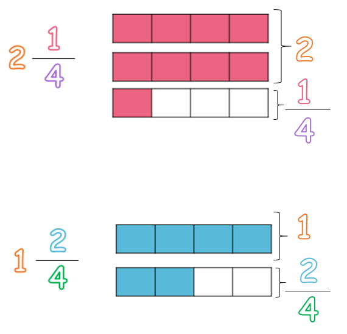
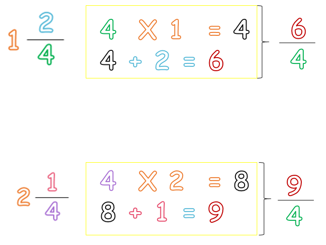
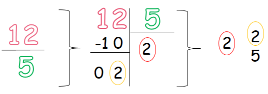

Fracciones
Parte 2- Recuerda los tipos de fracciones
- Lo que aprenderemos en esta segunda parte:
- Tipos de fracciones
- Términos de la fracción
- Cómo convertir una fracción mixta a una fracción impropia
(1)Tipos de fracciones:
- Existen 4 tipos de fracciones:
- Fracciones propias
- Fracciones impropias
- Fracciones unitarias
- Fracciones mixtas
Cada una de ellas tiene unas características especiales que las hacen diferentes.
Observa:
A. Fracciones propias:
Regla:
Son aquellas fracciones que tienen un numerador menor que el denominador.
B. Fracciones impropias:
Regla:
Son aquellas fracciones que tienen numerador mayor que el denominador.
Tip: Para representar fracciones impropias, observa que se repite la gráfica las veces que sean necesarias hasta colorear las piezas que te indica el numerador.
C. Fracciones unitarias:
Regla:
Son aquellas fracciones que tienen el numerador igual al denominador.
D. Fracciones mixtas:
Regla:
Una fracción es mixta cuando está formada por un número entero y una fracción.
Observa que el número entero representa la cantidad de unidades completas que se colorearon y el fraccionario representa solo el pedacito que se coloreo de la gráfica.
(2)¿Cómo convertir una fracción mixta a una fracción impropia?
Es muy sencillo, solo tienes que seguir estos dos pasos:
- (1) Multiplicas el denominador por la parte entera
- (2) A este resultado le sumas el numerador
Observa:
(3)¿Cómo convertir una fracción impropia a una fracción mixta?
Como has podido observar las fracciones mixtas están siempre relacionadas con las fracciones impropias, es por esto que podemos convertir la una a la otra.
Para pasar de una fracción impropia a una fracción mixta solo tienes que seguir estos pasos:
- (1) Divide el numerador con el denominador.
- (2) El cociente será el número entero.
- (3) El residuo será el numerador y de denominador quedará el mismo que tenías en la fracción impropia.
Observa:
Material extra para trabajar las fracciones propias, impropias y mixtas:
En este enlace podrás encontrar una ficha para trabajar las fracciones propias e impropias creada por Fichasparaimprimir.com.
Para trabajar las fracciones mixtas puedes desacargar la siguiente ficha creada por Fichasparaimprimir.com.
En este enlace encontrarás un repaso de las fracciones mixtas creado por Actividadeseducativas.net.
Video de orientación:
Las fracciones propias, impropias y mixtas de Mundo primaria.